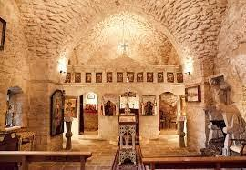
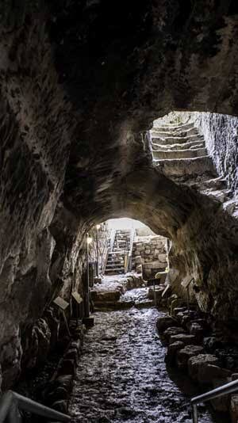
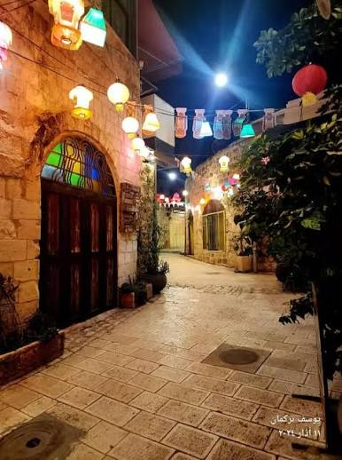
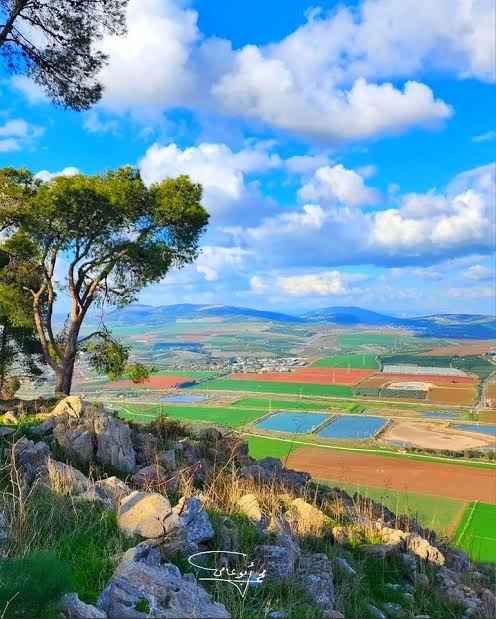

محتويات الصفحة
1. كنيسة برقين (كنيسة القديس جرجس)

تعتبر من أقدم الكنائس الأثرية في العالم، وتعود للفترة البيزنطية في القرن الرابع الميلادي. تقع الكنيسة في بلدة برقين وتشتهر بـ موقعها التاريخي الديني حيث تروي الروايات التاريخية أن السيد المسيح شفا فيها العشرة البرص في كهفها الأثري الملحق.
2.نفق بلعمة البرونزي

هو نفق مائي أثري مهيب محفور بالكامل في الصخر، ويعود تاريخ إنشائه إلى العصر البرونزي المبكر لاستخدامه كممر طوارئ سري آمن.
خطوات استكشاف النفق بأمان:
- ارتداء خوذة الحماية المخصصة للمغارات.
- تشغيل الكشاف الإضافي لإنارة الممرات المظلمة.
- الحذر أثناء السير على الأرضية الصخرية الرطبة.
3.السوق القديم وحي سيباط

يمثل حي سيباط النواة التاريخية وقلب مدينة جنين القديمة، ويتميز بأسقفه المقوسة وعمارته العثمانية العريقة. يعج السوق اليوم بـ المحلات التجارية الشعبية والدكاكين التراثية النابضة بالحياة التي تعرض المنتجات الريفية المحلية والحلويات الجنينية التقليدية.
معلومات الزيارة: مدة جولة التسوق المقترحة هي ساعتان كاملتان.
4.جبال فقوعة وطبيعنها

تتميز قرية وجبال فقوعة بجمال طبيعتها المطلة على مرج ابن عامر، وهي الموطن الأصلي لـ "سوسن فقوعة" الزهرة الوطنية لفلسطين التي تتفتح في فصل الربيع لتكسو المنطقة بألوانها الساحرة.